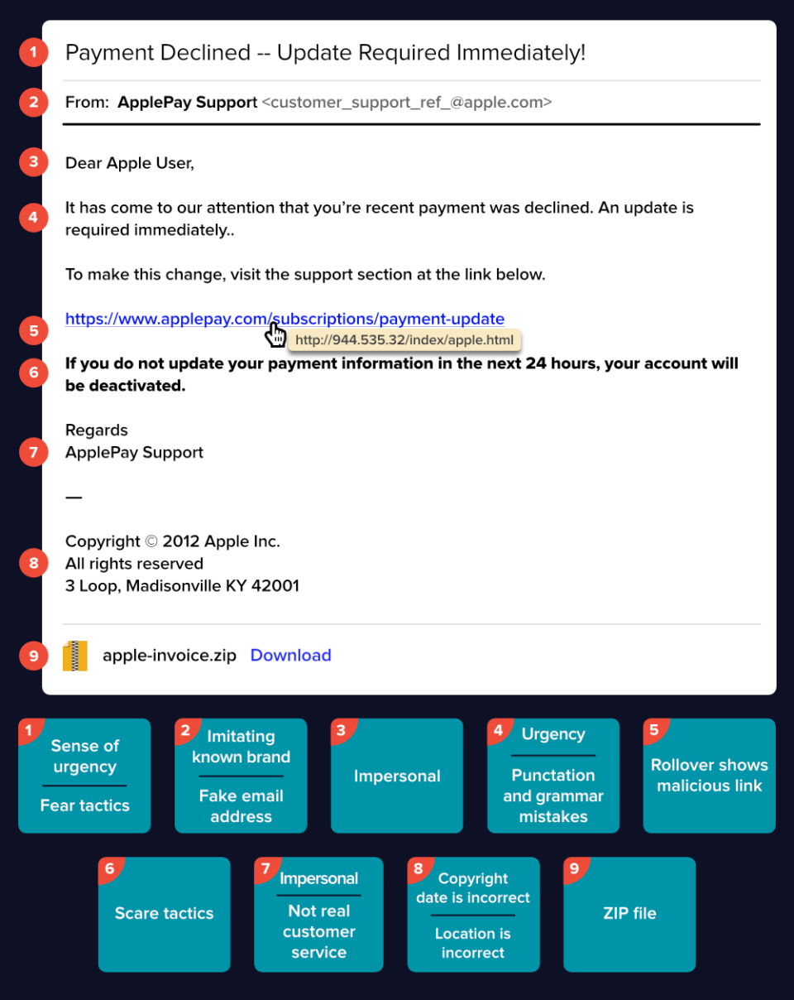
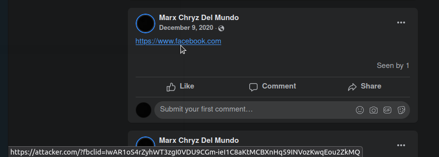

How Attackers Use Phishing Attacks in Any Website
Going back to the phishing email in the previous lessons, we can see here that when the victim hovers his mouse in the “applepay.com”, the link that is shown is some random IP address. Based on here, if the victim clicks the applepay.com link, he will not be redirected to applepay.com, but to the attackers phishing page located at http://944.535.32/

Phishing attacks like this works because the likelihood of the victim clicking the link is greater than the likelihood of the victim copy-pasting the applepay.com url.
Phishing attacks is not limited on emails, it can be use as well on chats and posts. Phishing messages in all medium shares a similarity, that there is a malicious link that needs to be clicked. Usually, this link is masked. Which means that the link that we see is not the same as the link that we clicked and this is done using HTML injection. In emails, attaching formatted text/links/images are part of the functionality, that's why attackers can easily trick users that the link is legitimate. However, in the Facebook post below, I managed to insert a malicious link even if Facebook does not allow it.

Note: This is an actual bug I found in Facebook, but Facebook didn't accepted it since they have more security that they already put into place (see Facebook link shim in next lessons)
In the example above, we can see a simplified phishing message, where only the phishing link is displayed. In this page, we can see that the URL displayed in the Facebook post is “https://www.facebook.com” but when the mouse is hovered, it reveals that the actual link is “https://attacker.com”. This might trick a victim because he thought he will be clicking facebook.com, not knowing that he will be redirected to attacker.com
This is how attackers can use phishing attacks in any website, by trying to post malicious links under legitimate ones.